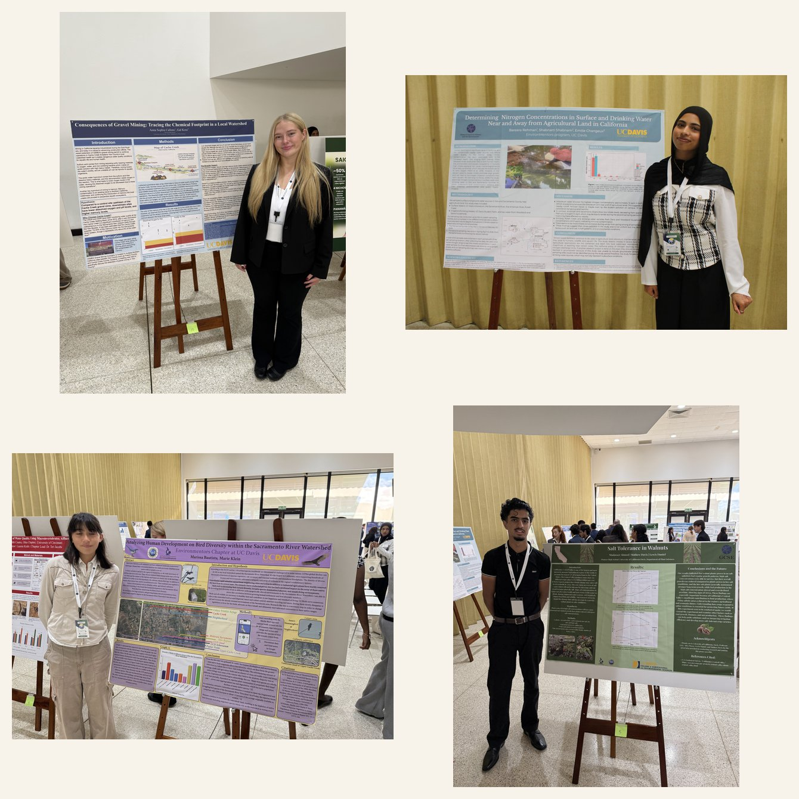
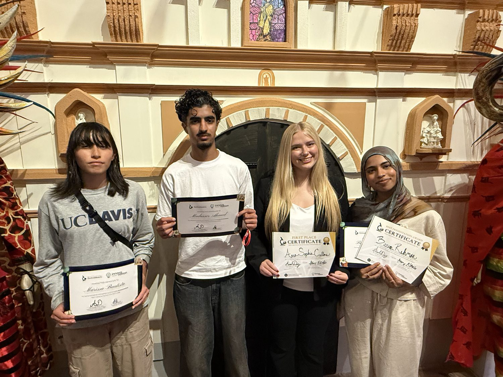
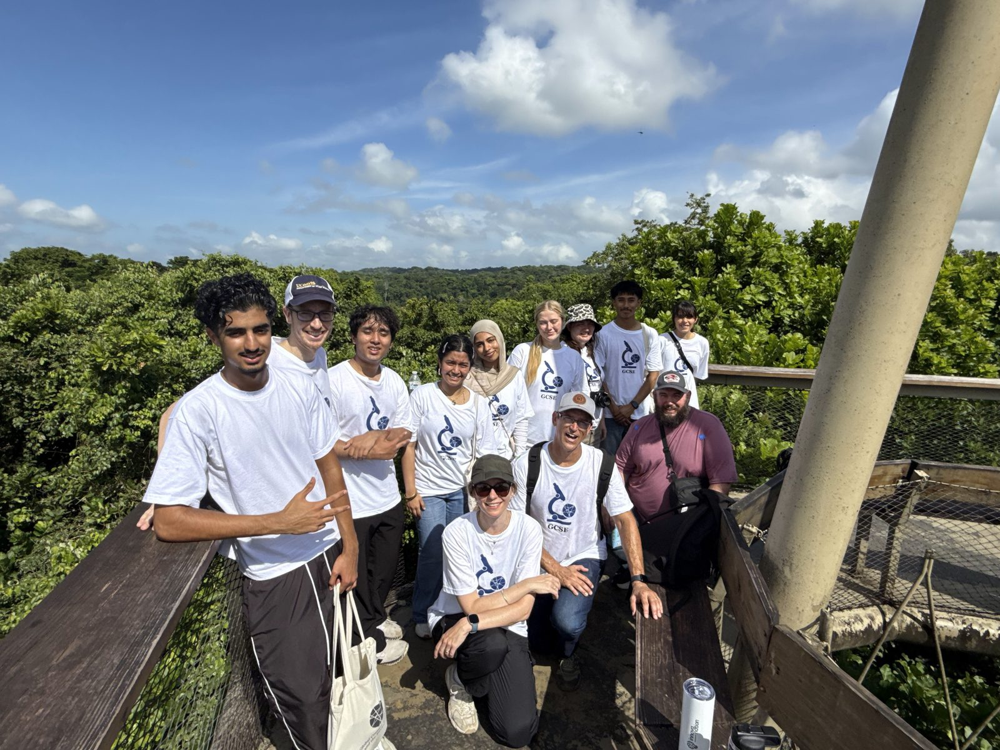
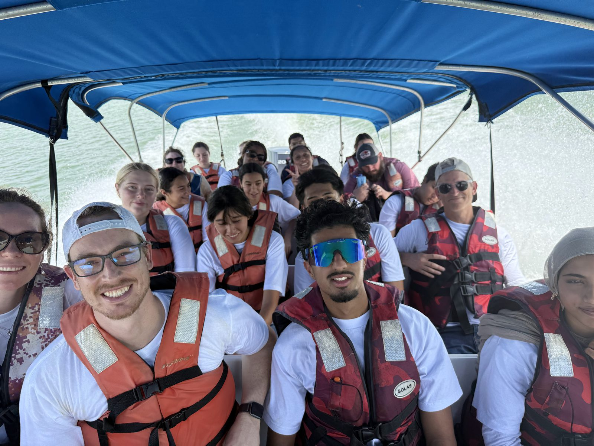

Four students, one international fair, a week in Panama.
How the UC Davis EnvironMentors chapter showed up at the GCSE International Science Fair, and what the students brought home.

This June, four of our students flew to Panama City for the GCSE International Science Fair: Anna Callens, Bareera Rehman, Marissa Bautista, and Mudasser Ahmed. They earned full scholarships to get there, among the most of any EnvironMentors chapter.
It really started months earlier, at the UC Davis Science Fair, where every student in the program presented their research. That includes the ones who didn't make the trip to Panama and still did outstanding work. They deserve as much credit as anyone.
Then came the early start. A 5 a.m. flight meant high schoolers at the airport by three, bleary and excited. Ten hours later, Panama. The next morning I woke up across the street from the Panama Canal and watched a container ship slide through. The students were already wide awake.
Meeting the world
Before the program began, we walked Casco Viejo, Panama City's UNESCO-listed old quarter: colonial streets, open-air markets, the sea close on either side. For a lot of the students it was a first taste of the country, and of travel like this at all.
That set up what the week was really about. The students met their roommates for the week, with many of ours paired with students from Saint Lucia, and then the rest of the chapters: Ecuador, Panama, Puerto Rico, and chapters from across the US. The welcome dinner was the first time everyone was in one room, and you could feel the scale of it.

The fair was held at Ciudad del Saber, the "City of Knowledge", a former US military base on the Canal that's been rebuilt into a campus of research institutes, agencies, and startups. The week mixed hands-on workshops with serious science. The Smithsonian Tropical Research Institute, which is based in Panama, shared their work. We also connected with Innova Nation, the Panama-based organization that led the local program and helps young people build ventures around technology and social good. That fits squarely with what we ask our own students to do: research that actually matters to people and the planet.
The fair
Then the fair itself. The students presented to international judges. We practiced the night before, and they were dialed: every one of them clear and genuinely enthusiastic about their work. Watching them hold their own in that room is the part I'll remember.

It was also, honestly, a hopeful thing to be around. Meeting talented students from every chapter, seeing what they'd built, you walk away thinking there's a real future here. Our students shone, and so did everyone else's.
The awards
The awards came at the closing dinner, with live traditional Panamanian music. Bareera Rehman, who presents with real energy, won Best Presentation. And then Anna Callens was named the top overall winner: first place at the international fair. The room erupted. I have rarely been prouder.


Their mentors share in that. Gal Koss worked with Anna, Shabnam Shabnam with Bareera, Marie Klein with Marissa, and Matt Davis with Mudasser. Marie made the trip to Panama too, co-chaperoning the week with me.
Rainforest to downtown, in a day
The trip wasn't only the competition. One day was pure Panama: a biodiversity hike in the Gamboa rainforest with the Smithsonian, a canopy tower, hummingbirds feeding from our hands. A boat ride through the Canal itself, close enough to look up at ships stacked with containers, out to the islands where the monkeys live. We saw three species of monkey, crocodiles, and long-nosed bats. Then dinner in a modern downtown that same evening. Much of the week ran in two languages, so the students got real immersion alongside the science. Culture, nature, and research, in one place.




Even the travel home was good: a long day of games and conversation. More than one student told me they didn't want to leave.
What a week like this does
The arc from a student's first day in the program to presenting on an international stage tells them something simple and important: they belong at a place like UC Davis, and they can be scientists. There's something raw and real about presenting your own work to peers, to adults, to scientists, and it builds a confidence that school doesn't always reach.
They also make real friendships with other people who care about this. There's a need for programs that bring those students together. And it gives ambitious young people a platform to do something meaningful while they're still in high school, not a simulation of research but the real thing.
These students give me hope. We have the kind of young people who will take on what's coming. I want to make this experience real for more of them, here in our region, and for UC Davis to be the place where that transformation happens.
None of it happens alone. Thank you to our mentors, who give their time all year: Gal Koss, Lucas Hornung, Emilie Changeux, Eloise Dresser, Connor Tumelty, David Mitchell, Maya Shydlowski, Kekoa Nelson, Lewis Daniel, Marie Klein, Matt Davis, and Shabnam Shabnam. Thank you to GCSE, including Ashley Nkollo and Avriel Diaz and the whole team, for the scholarships and for hosting a week like this. Thank you to the Smithsonian Tropical Research Institute and our innovation partners in Panama, to Pioneer High School and Kimberly Lumbard, and most of all to the students and families who said yes. This work is supported in part by the National Science Foundation through an NSF CAREER award (NSF #2338236). If you'd like to help us bring more students to moments like these, get involved.